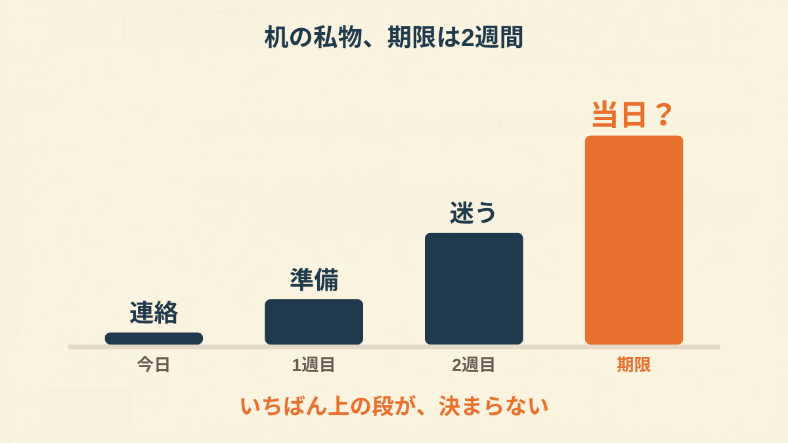
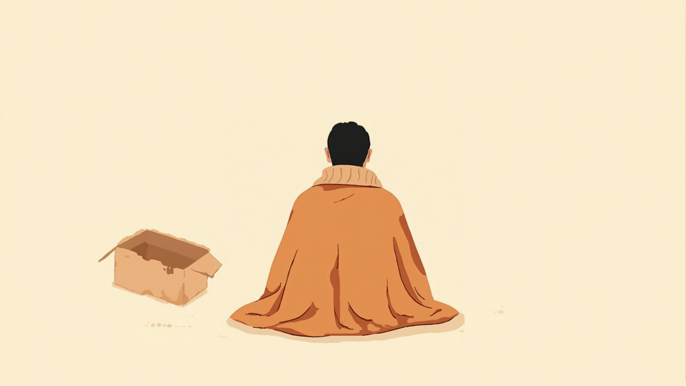
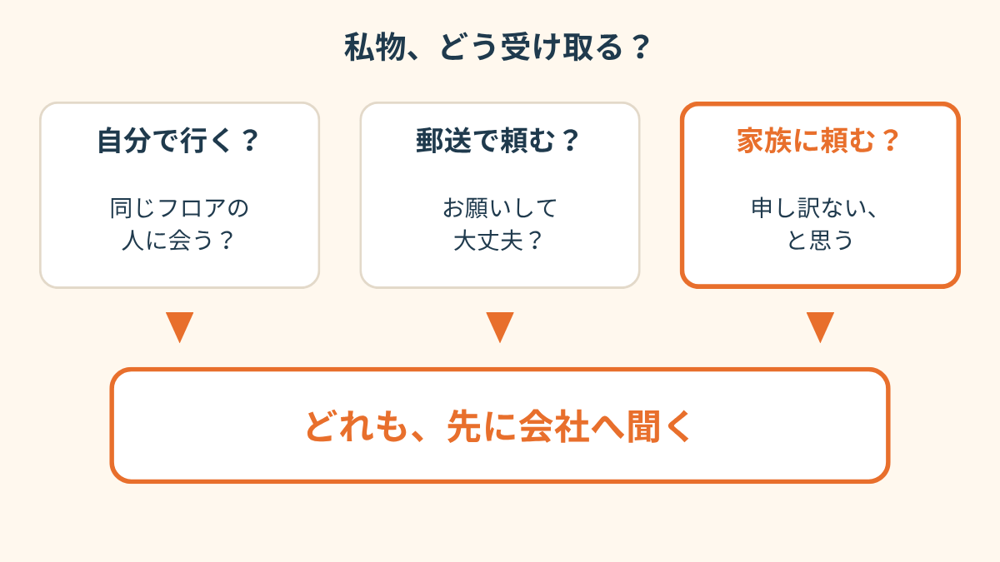
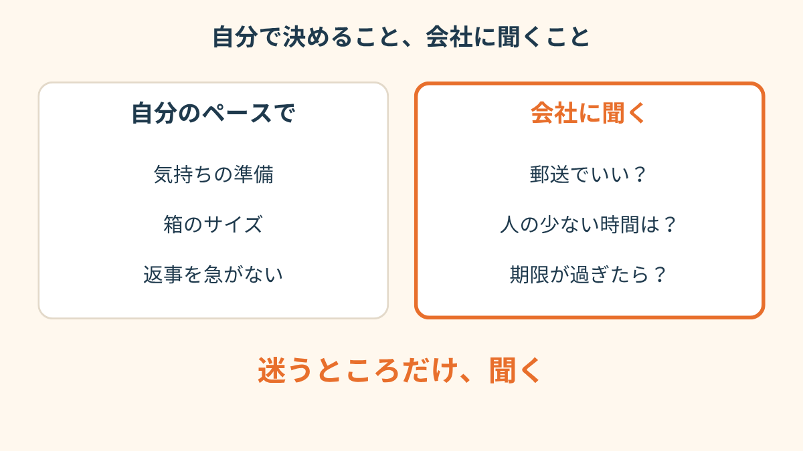
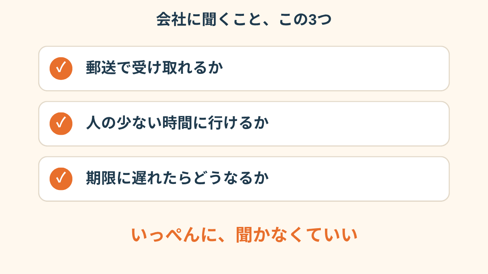
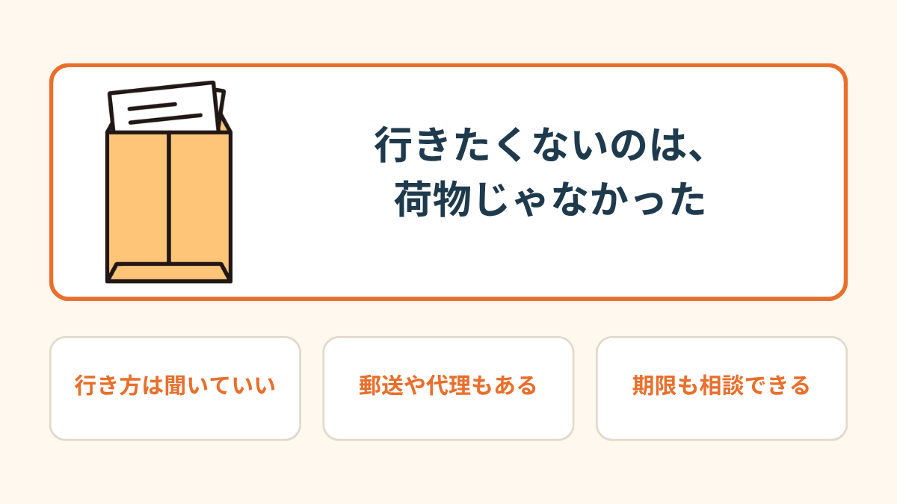
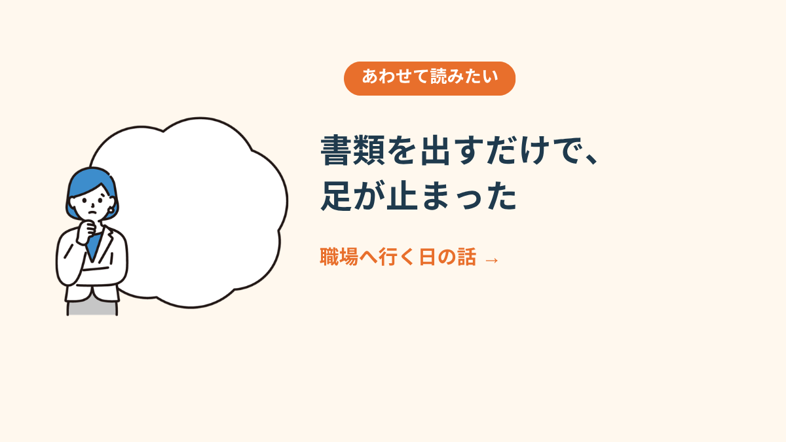

同期からのLINEだった。
休職して4ヶ月。その2日後、人事から「私物を持ち帰ってください」とメールが来た。
「机、なくなるらしいよ」
会社が、フリーアドレスになるらしい。席は決まらなくなる。だから、今ある机の引き出しは空にしてほしい、と。期限は2週間後だった。
引き出しに何を入れていたか、すぐには思い出せなかった。マグカップ。ひざ掛け。ちびた付箋の束。休んだ日のまま、止まっている机。
それが「なくなる」と書かれただけで、胸のあたりがきゅっとなった。


「片付けに来てって言われて、正直、荷物はどうでもよかったんです。同じフロアの人に会うのが無理で。顔を上げたときの、あの一瞬が」
行きたくないのは、段ボールじゃなかった
最初は、行くしかないと思った。土曜の朝なら、人も少ない。そう考えて、カレンダーに印をつけた。
でも前の晩、眠れなかった。誰もいなくても、「休んでるのに来たんだ」と思われる気がして。エレベーターで誰かと一緒になったら、何て言う？ その想像だけで、朝までかかった。

「家族に取りに行ってもらいました。最初は申し訳なくて言えなかったんですけど、『なんで先に言わなかったの』って怒られて。ちょっと泣きました」

人事に、3つだけ聞いた
夜の11時に、私用のスマホでメールを書いた。事情を説明しようとして、長くなって、全部消した。
残したのは、3つの質問だけ。
「休職中の○○です。机の私物について、①郵送で受け取ることはできますか、②難しい場合、人の少ない時間に伺うことはできますか、③期限までに間に合わない場合はどうなりますか」
送信してから、冷蔵庫の前でしばらく立っていた。

届いた箱は、思ったより軽かった
返事は、翌日の昼に来ていた。
「郵送で対応します。着払いの伝票を同封しますので、お手元の箱でお送りいただくか、こちらで梱包してお送りすることもできます。期限は、延ばして問題ありません」
こちらで梱包、という4文字に、肩が落ちた。行かなくてよかった。そして、聞けばよかっただけだった。
3日後に届いた段ボールは、拍子抜けするほど軽かった。マグカップは、新聞紙にくるまれていた。誰がやってくれたのかは、分からない。付箋の束は、ちびたまま入っていた。

「聞くまでが長かったです。聞いたら、『いいですよ』の一言で。あの1週間、何だったんだろうって」


会社の前で、足が止まった日の話 →この記事に、聞いてみたいことはありますか？
「自分の場合はどうなんだろう」と思ったことを、気軽に書いてみてください。いただいた質問は個別にお返事したうえで、匿名で記事にすることがあります。